1. INTRODUCCIÓN
En este sistema se denomina Planificación Avanzada (APS) al proceso de secuenciación de operaciones de fábrica sobre recursos de capacidad finita. A diferencia de un MRP tradicional, Logic APS garantiza que el programa resultante sea ejecutable, considerando la disponibilidad real de máquinas, turnos humanos y materiales en tiempo real.
Este manual explica la configuración de los parámetros críticos de la planta y el uso de las herramientas de monitorización estratégica, permitiendo al usuario gestionar el flujo de producción por excepción.
El objetivo principal de Logic APS es maximizar el Throughput (rendimiento) del sistema protegiendo siempre la fecha de entrega comprometida con el cliente final.
Diferencia entre APS y MRP II
El MRP II parte de una premisa de "capacidad infinita", asumiendo que siempre hay recursos para producir. El APS nace para corregir esto, reconociendo que los recursos son limitados. Logic APS utiliza algoritmos heurísticos para resolver conflictos de carga, priorizando el flujo sobre el aprovechamiento local de máquinas no críticas.
2. PANEL DE CONTROL ESTRATÉGICO
Se explica en esta sección la pantalla inicial de mando, diseñada bajo el principio de Gestión Visual. El sistema procesa miles de variables para presentar solo los indicadores de salud más relevantes para la gerencia de planta.
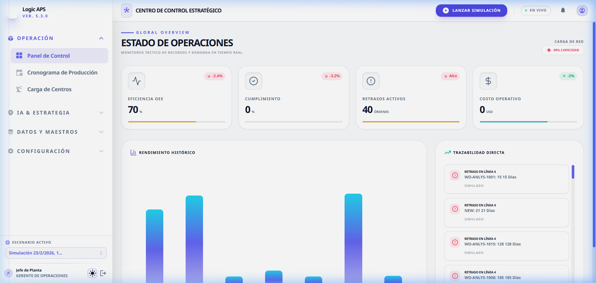
2.1 Desglose de Campos e Indicadores
Al ingresar a este módulo, se visualizan los siguientes contenedores de información:
-
Eficiencia OEE (Overall Equipment Effectiveness)
Representa el porcentaje de efectividad real de los equipos.
Composición: Al hacer clic en esta tarjeta, se desglosa en Disponibilidad (tiempo productivo), Rendimiento (velocidad de ejecución) y Calidad (índice de rechazo).
Uso: Un valor inferior al 85% debe interpretarse como una pérdida de rentabilidad por mala utilización de activos. -
Cumplimiento (Nivel de Servicio)
Indica el porcentaje de Órdenes de Trabajo (Mandatos de Producción) que terminarán exactamente en o antes de la fecha requerida por el cliente.
Acción: Si este valor es bajo, el planificador debe simular escenarios de horas extras o agregar máquinas. -
Retrasos Activos
Muestra el conteo de Órdenes cuya finalización proyectada ya ha superado la fecha límite permitida. El sistema mide esto en unidades de "Órdenes" afectadas.
-
Costo Operativo Proyectado
Valorización económica de la carga de trabajo asignada para el periodo de simulación actual. Permite prever el flujo de caja operativo necesario.
-
Carga de Red (Network Load)
Ubicado arriba a la derecha (icono ⚡). Indica el grado de saturación total de la fábrica.
Tip: Una carga mayor al 95% indica una planta "rígida" donde cualquier imprevisto (como que una máquina se rompa) provocará retrasos en cadena. -
Rendimiento Histórico
Gráfico de barras que representa la salida diaria de productos terminados.
Qué observar: Los valles prolongados indican falta de sincronización en el suministro de materias primas o cuellos de botella en procesos tempranos. -
Trazabilidad Directa (Logs)
Registro cronológico de anomalías. Explica el "Por qué" de los problemas.
Severidades:- Error: Paro total de flujo o retraso severo.
- Advertencia: El buffer de tiempo se está agotando.
- Aviso: Ejecución completada según lo previsto.
Logic APS aplica el concepto de Gestión por Excepción: Si el panel de Trazabilidad no muestra alertas rojas, el planificador no necesita intervenir, permitiendo que la planta fluya de forma autónoma.
3. CONSOLA DE SIMULACIÓN
Este módulo es el "Laboratorio de Pruebas" donde el usuario puede modificar las restricciones físicas de la planta para observar el impacto en los resultados de entrega sin afectar la producción real hasta que decida aplicar el escenario. Es una herramienta de análisis de Escenarios "What-If".
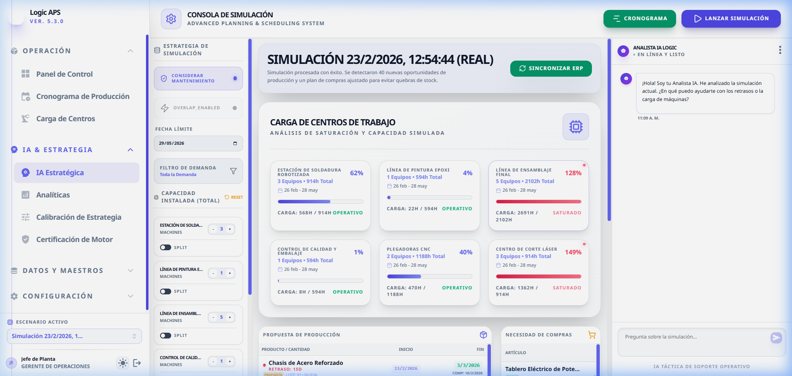
3.1 Desglose de Parámetros de Escenario
-
Estrategia: Considerar Mantenimiento
Determina si el motor APS debe respetar las paradas por mantenimiento preventivo cargadas en el sistema. Al estar activo (ON), el sistema restará esas horas de la capacidad disponible del centro de trabajo, lo que puede empujar las órdenes hacia adelante en el tiempo.
Uso sugerido: Desactivar solo en casos de emergencia extrema para cumplir con una orden de prioridad crítica ("Rush Order"). -
Estrategia: Habilitar Solapamiento (Overlap)
Implementa la técnica de Transferencia de Sub-lotes. Permite que una pieza de un lote pase a la operación siguiente sin esperar a que termine el lote completo en la máquina actual.
Impacto: Reduce drásticamente el Lead Time (tiempo de entrega) hasta en un 40%, pero aumenta la carga logística en el taller al requerir movimientos constantes de materiales. -
Ajuste de Capacidad por Centro de Trabajo
Control numérico que permite aumentar o disminuir la cantidad de recursos (máquinas o personas) disponibles en un centro específico.
Ejemplo: Si el centro "Soldadura" tiene carga roja, usted puede simular instantáneamente el efecto de contratar a un operario adicional o habilitar una máquina que estaba fuera de servicio. -
División de Lote (Split)
Si se activa, el algoritmo APS tiene permiso para fragmentar una Orden de Trabajo grande y procesarla en varias máquinas idénticas en paralelo. Esto maximiza la velocidad de entrega, pero ocupa más recursos simultáneamente.
El Rol del Analista IA
Acompañando a la consola, el Analista IA procesa millones de combinaciones de datos para entregarle una conclusión ejecutable. No se limite a leer las barras rojas; pregunte a la IA: "¿Por qué se retrasa la orden OC-123?" y obtendrá una respuesta técnica basada en la ruta del artículo y los cuellos de botella detectados.
4. ANÁLISIS DE CARGA (TEORÍA DE RESTRICCIONES)
Esta vista permite identificar visualmente los Recursos Cuello de Botella (Drum). El sistema compara la Demanda de Tiempo (horas requeridas por las órdenes) contra la Capacidad Instalada (horas disponibles según turnos y máquinas).
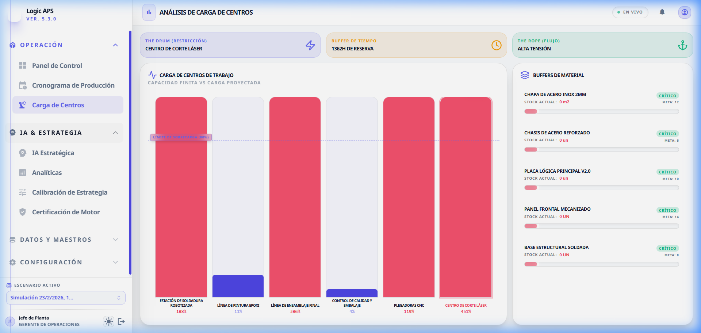
4.1 Elementos del Análisis de Carga
-
Estatus de Carga por Centro
Se muestra una barra porcentual para cada Centro de Trabajo.
• Azul/Verde: Recurso con capacidad ociosa adecuada.
• Naranja: Recurso operando cerca del límite (alerta de zona de riesgo).
• Rojo: Recurso saturado (Cuello de Botella). Toda hora perdida aquí es una hora de retraso para el cliente final. -
Carga Acumulada (Semanas)
Representación gráfica de cuándo ocurrirá el pico de trabajo. Útil para decidir si se deben adelantar órdenes de semanas futuras (zona azul) para nivelar la carga.
-
Barras de Saturación
Representan el porcentaje de ocupación.
Código de Color: Azul (Operativo), Rojo (Saturado/Crítico).
Un centro en rojo indica que la demanda supera la capacidad instalada para el rango de fechas elegido. -
Balance de Capacidad
Muestra la relación numérica (Ej: 560h / 400h). Ayuda a cuantificar cuántas horas de sobrecosto o subcontratación son necesarias para nivelar la carga.
5. CRONOGRAMA GANTT (Línea de Tiempo)
Representa la ejecución táctica. Es la hoja de ruta que la planta debe seguir. Cada bloque es una tarea asignada a una máquina específica en un minuto exacto.
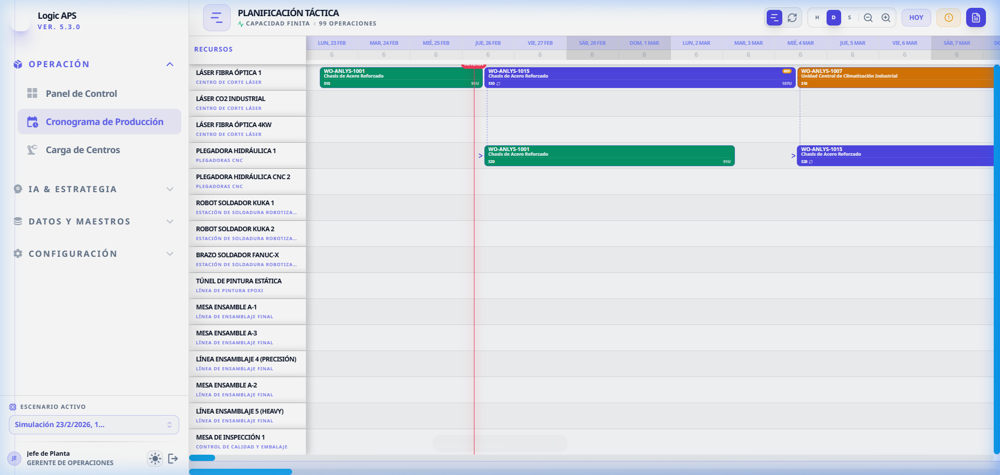
-
Barras de Operación
Coloridas y etiquetadas con la Orden de Trabajo y el Producto. Su longitud representa el tiempo que la máquina estará ocupada procesando.
-
Flechas de Dependencia (Vínculos)
Son la columna vertebral de la lógica de fabricación. Indican el camino que sigue el producto a través de las distintas máquinas. Logic APS impide que una flecha apunte "atrás en el tiempo", asegurando planes lógicos.
-
Ajuste Manual (Drag & Drop)
El usuario puede mover una barra de una máquina a otra para optimizar visualmente.
Lo que ocurre debajo: Al soltar la barra, el sistema recalcula instantáneamente todas las tareas conectadas para absorber el cambio sin crear huecos de inactividad. -
Controles de Zoom y Tiempo
Permiten cambiar la escala de visualización de Minutos a Semanas. Fundamental para planificación de largo plazo vs supervisión de turno actual.
6. INTELIGENCIA ANALÍTICA
En este módulo se consolidan las métricas de rendimiento estratégico de la planta. Permite a la gerencia evaluar si la capacidad instalada es coherente con la demanda comercial. No es una pantalla operativa, sino de decisión ejecutiva.
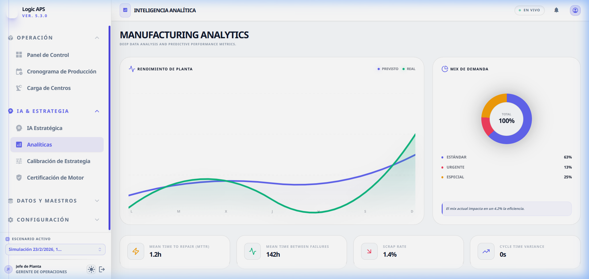
6.1 Indicadores de Desempeño (KPIs)
-
OEE Promedio (Efectividad Global de Equipos)
Mide la Disponibilidad, el Rendimiento y la Calidad de la planta. Un OEE bajo es un síntoma de que el plan de Logic APS está siendo boicoteado por paradas no programadas (averías) o micro-paradas en el piso.
-
Mix de Demanda por Prioridad
Gráfico circular que segmenta las órdenes en Urgente, Estándar y Especial.
Análisis: Si más del 30% de sus órdenes son "Urgentes", su planta está perdiendo eficiencia por cambios de formato (Setups) constantes. Logic APS le permite visualizar esta "inflación de urgencia". -
Confiabilidad de Activos (MTTR / MTBF)
• MTBF (Mean Time Between Failures): Tiempo promedio que una máquina opera antes de fallar. Si este valor baja, debe aumentar la frecuencia de sus preventivos.
• MTTR (Mean Time To Repair): Tiempo promedio en volver a poner en marcha la máquina. Si es alto, el motor APS reservará más "colchón" de tiempo para absorber la incertidumbre.
7. CALIBRACIÓN Y AUDITORÍA
Esta sección contiene las herramientas para asegurar la precisión del "Cerebro" de Logic APS. Para que las fechas de entrega sean exactas, los parámetros del motor deben reflejar la realidad física de la planta.
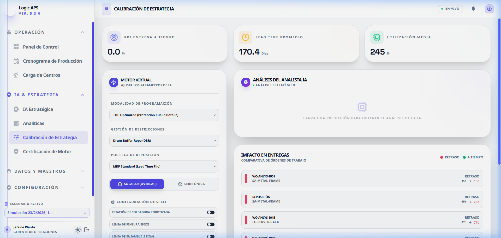
7.1 Calibración del Algoritmo (Cerebro APS)
Usted puede ajustar el "comportamiento" del motor de planificación moviendo los siguientes pesos:
-
Peso de la Fecha de Entrega (%)
Cuanto más alto sea este valor, más "estricto" será el motor en cumplir la Due Date aunque esto implique dejar máquinas ociosas o hacer más cambios de pieza. Es una estrategia de Servicio al Cliente al 100%.
-
Peso de la Eficiencia de Recurso (%)
Al priorizar la eficiencia, el motor agrupará órdenes que usen la misma herramienta o material para minimizar los tiempos de limpieza (Setup). Es una estrategia de Minimización de Costos Operativos.
-
Factor de Buffer de Tiempo
Un multiplicador de seguridad que se añade a cada operación para absorber la variabilidad humana. Si su planta es muy estable, puede bajarlo a 1.05; si es muy variable, súbalo a 1.25.
7.2 Certificación de Motor APS
El Laboratorio de Certificación es una herramienta de auditoría de estrés. Ejecuta 36 combinaciones estratégicas diferentes contra un conjunto de datos maestros patrón (Gold Dataset).
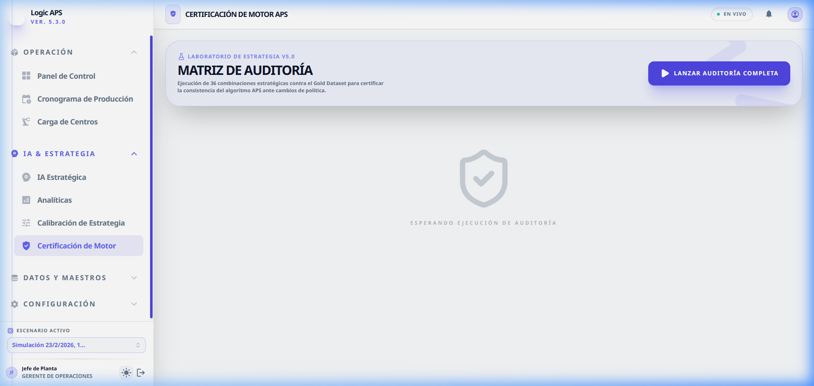
¿Qué busca certificar esta matriz?
-
Cruce de Políticas (MPS vs MRP)
Audita si el sistema entrega fechas lógicas cuando se combina una programación JIT (Just-In-Time) con una política de compra de materiales basada en TOC.
-
Diferencia de Makespan
Compara cuánto tiempo total (Makespan) se ahorra al activar el Overlap bajo distintas restricciones. Si el ahorro es nulo, el sistema alerta sobre una mala configuración de rutas.
-
Estatus "Gold Validated"
Este sello indica que el motor ha pasado todas las pruebas de integridad: ninguna orden tiene fecha de fin previa a su fecha de inicio y no hay consumos de material imposibles (causalidad lógica).
8. GESTIÓN DE DATOS Y MAESTROS
Esta sección es la "Base de Conocimiento" de la planta. Explica cómo Logic APS estructura la información técnica para alimentar al algoritmo de planificación.
8.1 Monitor de Buffers Dinámicos (DBM)
Basado en el estándar de Demand Driven MRP, este monitor permite visualizar el riesgo de las órdenes de trabajo no por fecha, sino por consumo de amortiguador.
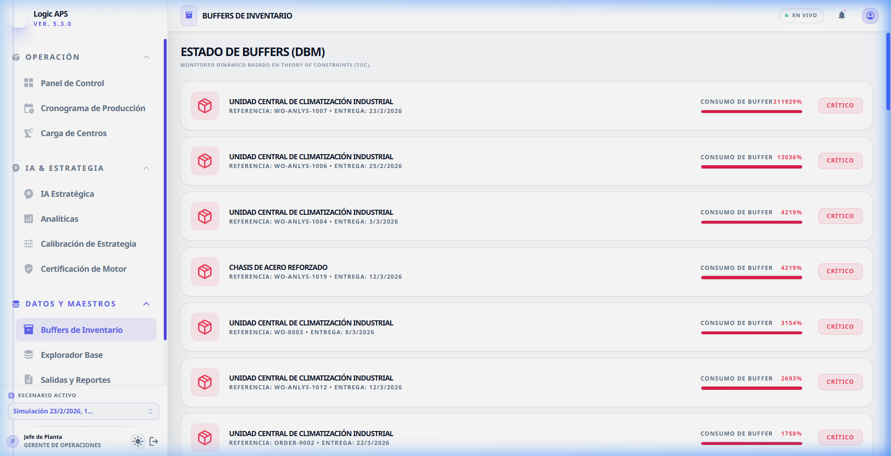
-
Código de Colores (Semáforo)
• Verde (Safe): La orden tiene suficiente margen de tiempo.
• Amarillo (Watch): Se ha consumido más del 66% del tiempo de buffer. Requiere atención.
• Rojo (Critical): Consumo > 100%. La orden se entregará tarde a menos que se asigne recurso extra. -
Sugerencias de Optimización
El sistema detecta automáticamente si un artículo tiene exceso de stock y sugiere reducir el lote mínimo de compra (MOQ) para liberar capital de trabajo.
8.2 Explorador de Datos (Ingeniería de Planta)
Es el punto de acceso central a las tablas maestras. Aquí es donde el usuario carga o sincroniza la "Foto" de su fábrica.
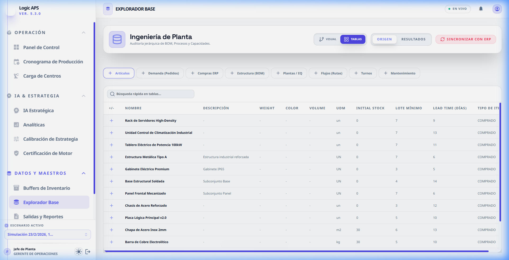
Campos críticos que el usuario debe supervisar:
-
Maestro de Artículos: Lote Mínimo (MoQ)
Cantidad más pequeña que el proveedor le permite comprar o que su fábrica debe producir por eficiencia. Un MoQ muy alto genera inventario innecesario.
-
Estructuras (BOM)
El árbol de componentes. Logic APS utiliza esta jerarquía para asegurar que ninguna Orden de Trabajo comience si los componentes de nivel inferior no están disponibles.
-
Ruteos y Tiempos
Define la secuencia de máquinas. Contiene el Setup Time (preparación) y el Run Time (procesamiento unitario). Estos valores deben ser auditados regularmente para que el Gantt sea realista.
8.3 Salidas y Reportes (HUB de Exportación)
Una vez que el plan es satisfactorio en el simulador, el usuario utiliza este módulo para comunicar las decisiones a la planta y al ERP.
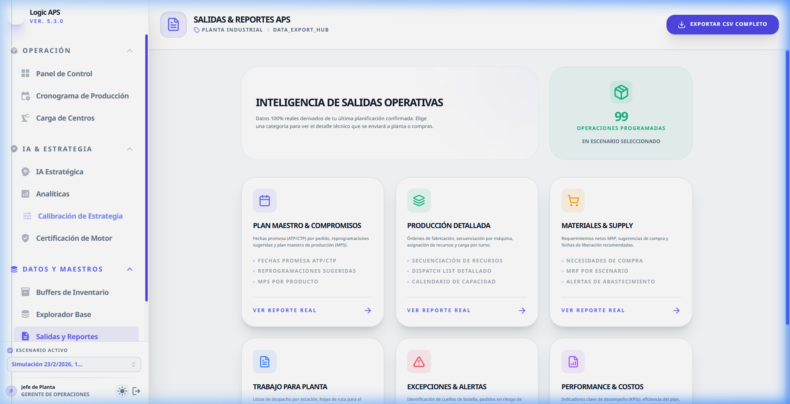
-
Lista de Kitting (Picking)
Informe detallado para el Almacén. Indica exactamente qué componentes deben entregarse a cada Centro de Trabajo y en qué momento preciso para iniciar la producción.
-
Programa Maestro (MPS)
Listado de fechas de compromiso ATP (Available to Promise). Es la información que se devuelve al área comercial para informar a los clientes.
-
Alertas de Excepción
Reporte de "todo lo que salió mal". Lista órdenes retrasadas, máquinas con sobrecarga y falta de insumos, permitiendo una gestión proactiva.
9. CONFIGURACIÓN DEL SISTEMA
Ajustes generales de la aplicación, idioma y preferencias de visualización.
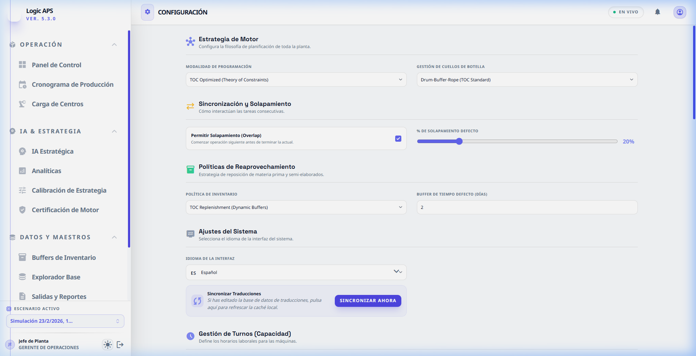
ANEXO: GUÍA DE CARGA INICIAL (QUÉ DEBE CARGAR EL USUARIO)
Para que el motor APS funcione con precisión, el usuario debe cargar los siguientes pilares de datos en el Explorador Base:
| Entidad | ¿Qué es? | Dato Crítico a Cargar |
|---|---|---|
| Artículos | Productos terminados e insumos. | Lead Time: Tiempo de compra/fabricación. MOQ: Lote mínimo. |
| Centros de Trabajo | Agrupación de máquinas o personas. | Eficiencia: Factor humano (%) de productividad real.
Disponibilidad: Turnos de 8h, 12h o 24h. |
| Ruteos (Estructuras) | Pasos para fabricar un producto. | Tiempos de Setup: Cuánto tarda en limpiar/preparar la máquina.
Tiempos de Run: Segundos por pieza. |
| Ordenes de Operación | La demanda actual. | Fecha de Entrega (Due Date): La promesa al cliente.
Prioridad: Valor del 1 al 10. |
REGLA DE ORO: Logic APS es un optimizador, no un creador de datos. Si un tiempo de ruteo es de 10 minutos pero en la realidad el operario tarda 20, el sistema le entregará un plan imposible de cumplir. Use la Inteligencia Analítica para corregir sus maestros.